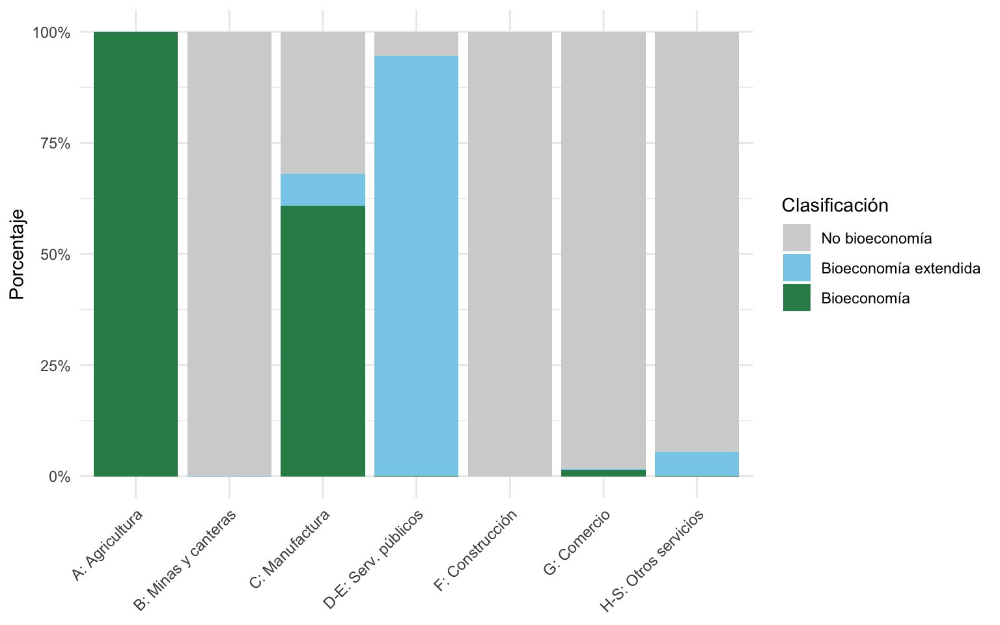
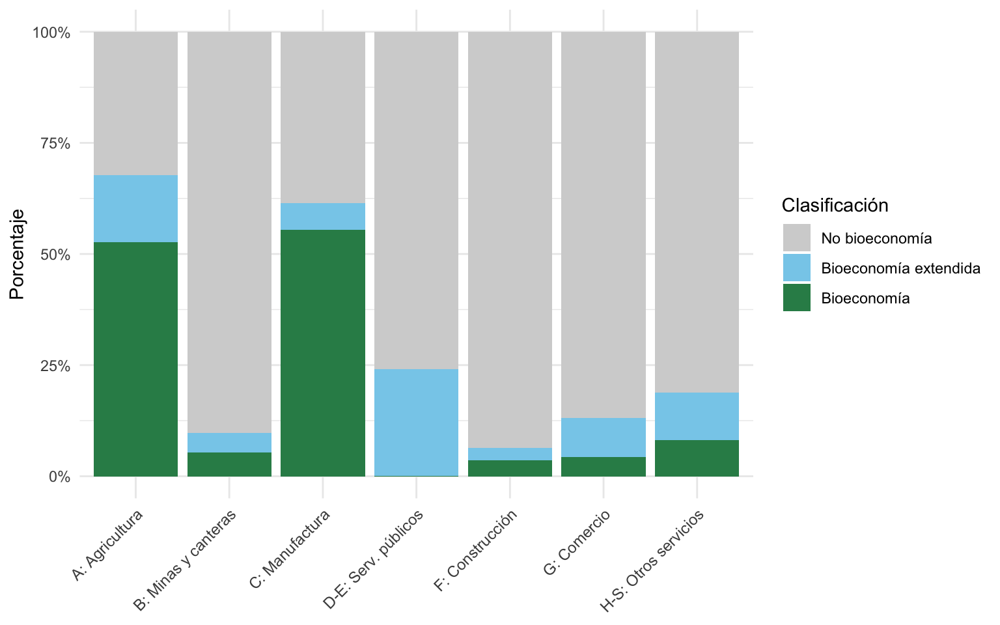
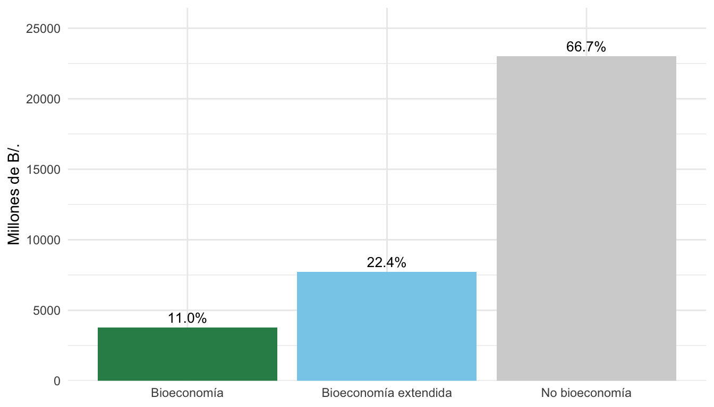
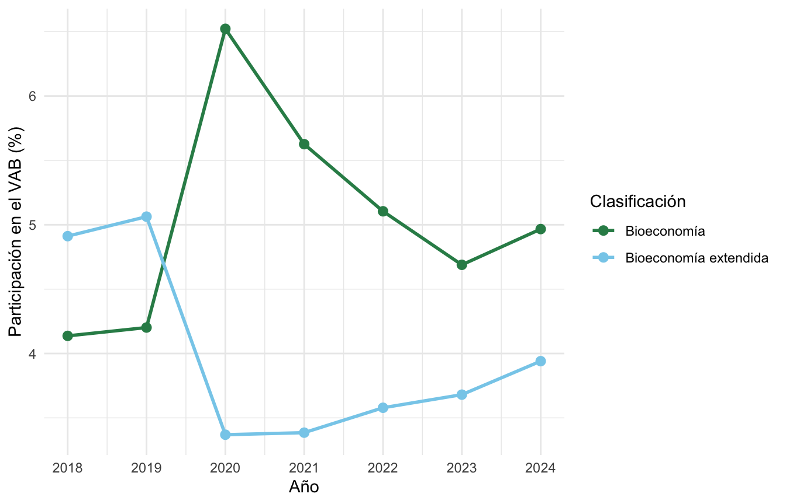
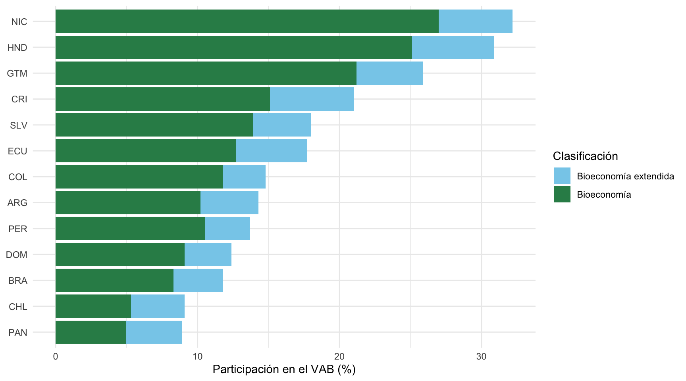

Cuenta de Bioeconomía de Panamá
Resumen
El presente documento describe la construcción de una cuenta satélite de bioeconomía para Panamá, utilizando los Cuadros de Oferta y Utilización (COU) del Sistema de Cuentas Nacionales para el período 2018–2024. A través de una clasificación de productos basada en la Clasificación Central de Productos (CPC), se distingue entre productos de bioeconomía directa, bioeconomía extendida y no bioeconomía. Los resultados para 2024 (cifras provisionales) indican que la bioeconomía directa representa aproximadamente el 8.1% de la producción total del país y cerca del 5.0% del valor agregado bruto, mientras que la bioeconomía extendida aporta un 5.4% adicional a la producción y un 3.9% al valor agregado. La serie temporal 2018–2024 permite observar el comportamiento de los sectores bioeconómicos durante la contracción económica asociada a la pandemia de COVID-19 en 2020 y su posterior recuperación. Estos resultados constituyen una línea base para el seguimiento de la bioeconomía panameña y sientan las bases para análisis más profundos cuando se disponga de una matriz de insumo-producto actualizada.
Palabras clave: bioeconomía, cuentas nacionales, cuentas satélite, cuadros de oferta y utilización, Panamá.
Introducción
La medición de la bioeconomía se ha posicionado como un tema estratégico para los países de América Latina y el Caribe, pues es una región cuya dotación de recursos naturales y biológicos le confiere ventajas comparativas relevantes para el desarrollo de actividades económicas basadas en la biomasa (Rodríguez et al., 2017). Si bien la bioeconomía abarca un espectro amplio de sectores productivos, su contribución al producto interno bruto (PIB) y al empleo no siempre es visible en las estadísticas macroeconómicas convencionales, lo que dificulta su incorporación en el diseño de políticas públicas.
En años recientes, la Comisión Económica para América Latina y el Caribe (CEPAL) ha impulsado el desarrollo de cuentas satélite de bioeconomía para diversos países de la región, aplicando una metodología que se apoya en el marco del Sistema de Cuentas Nacionales (SCN) y en las clasificaciones internacionales de productos y actividades económicas (Vargas et al., 2022, 2023). Estos esfuerzos han permitido obtener estimaciones comparables de la contribución de la bioeconomía en trece países latinoamericanos, revelando estructuras productivas heterogéneas que reflejan las particularidades de cada economía nacional.
Panamá presenta un perfil económico singular en la región. Su economía, fuertemente orientada al sector de servicios; en particular logística, comercio internacional y finanzas, se distingue de las economías vecinas con mayor peso relativo de la agricultura y la manufactura. No obstante, el sector agropecuario, la pesca, la industria alimentaria y otras actividades basadas en recursos biológicos desempeñan un papel significativo en el tejido productivo panameño y en la seguridad alimentaria del país. Cuantificar la dimensión bioeconómica de estas actividades resulta fundamental para una comprensión integral de la estructura productiva nacional.
El presente documento aplica la metodología de cuentas satélite de bioeconomía al caso de Panamá, utilizando los Cuadros de Oferta y Utilización (COU) del Sistema de Cuentas Nacionales elaborados por el Instituto Nacional de Estadística y Censo (INEC) para el período 2018–2024 (INEC Panamá, 2024). A diferencia de otros ejercicios realizados para la región, como el caso de Ecuador que incorporó la Matriz de Insumo-Producto en el análisis (Vargas, 2025), Panamá no cuenta con una Matriz de Insumo Producto (MIP) actualizada, lo que delimita el alcance del análisis a la contribución directa de la bioeconomía sin incluir encadenamientos productivos ni multiplicadores.
El documento se organiza de la siguiente manera. La Sección 2 presenta el marco conceptual y metodológico, incluyendo una breve descripción del SCN, la definición operativa de bioeconomía utilizada y el proceso de clasificación de productos. La Sección 3 expone los principales resultados para el año 2024 y la evolución temporal del período 2018–2024, así como una comparación con otros países de la región. Finalmente, la Sección 4 ofrece las conclusiones, limitaciones del ejercicio y recomendaciones para futuras actualizaciones.
Marco conceptual y metodológico
El Sistema de Cuentas Nacionales y los cuadros de oferta y utilización
El Sistema de Cuentas Nacionales 2008 (Comisión Europea et al., 2016) constituye el marco estadístico internacional que organiza la información sobre la actividad económica de un país. Dentro de este sistema, los Cuadros de Oferta y Utilización (COU) ocupan un lugar central, ya que integran de manera coherente la información sobre la producción, el consumo intermedio, la demanda final y el valor agregado de una economía.
El cuadro de oferta describe el origen de los bienes y servicios disponibles en la economía. En sus filas se registran los productos, clasificados según la Clasificación Central de Productos (CPC), y en sus columnas las actividades económicas que los producen, clasificadas según la Clasificación Industrial Internacional Uniforme (CIIU). A estas columnas se suman las importaciones, los impuestos sobre los productos, las subvenciones y los márgenes de distribución. La identidad contable fundamental establece que la oferta total de cada producto es igual a su utilización total.
El cuadro de utilización, por su parte, muestra el destino de esos bienes y servicios. Su cuerpo principal registra el consumo intermedio. Es decir, los insumos que cada actividad económica adquiere para su proceso productivo. Sus columnas adicionales recogen las exportaciones, el gasto de consumo final y la formación bruta de capital. El valor agregado bruto (VAB) de cada actividad se obtiene como la diferencia entre el valor bruto de su producción a precios básicos y su consumo intermedio:
\text{VAB} = \text{Producción} - \text{Consumo intermedio}
El PIB por el lado de la producción se calcula sumando al VAB total los impuestos netos sobre los productos:
\text{PIB} = \sum \text{VAB} + \text{Impuestos sobre productos} - \text{Subvenciones a productos}
Para Panamá, los COU utilizados en este ejercicio comprenden 188 productos y 90 actividades económicas (columnas de producción, diferenciadas por condición de mercado) para cada uno de los años del período 2018–2024, a precios corrientes expresados en millones de balboas (B/.), moneda equivalente al dólar estadounidense.
Definición de bioeconomía
La definición de bioeconomía adoptada en este trabajo sigue la propuesta del Consejo Alemán de Bioeconomía, presentada en la Cumbre Global de Bioeconomía de 2018, que establece que la bioeconomía comprende “la producción, utilización y conservación de recursos biológicos, incluyendo el conocimiento, la ciencia, la tecnología y la innovación relacionados, para proporcionar información, productos, procesos y servicios a todos los sectores económicos, con el propósito de avanzar hacia una economía sostenible” (German Bioeconomy Council, 2018).
Esta definición, ampliamente aceptada en la literatura internacional (IACGB, 2018, 2020), permite operacionalizar la medición de la bioeconomía a través de los sistemas de cuentas nacionales, al vincularla con los flujos de productos de origen biológico que circulan en la economía. De acuerdo con el enfoque metodológico desarrollado por Vargas et al. (2022) y ampliado en Vargas et al. (2023), se distinguen tres categorías de productos:
Bioeconomía: Productos que son directamente recursos biológicos o cuyo proceso de producción implica la transformación primaria de biomasa (por ejemplo, productos agrícolas, forestales, pesqueros, alimentos procesados, madera aserrada).
Bioeconomía extendida: Productos cuya elaboración requiere insumos biológicos en una proporción significativa, pero que también incluyen un componente cuya fracción no es evidente de productos no biológicos (por ejemplo, productos farmacéuticos de base biológica, textiles de fibras naturales, biocombustibles).
No bioeconomía: Productos cuyo origen y proceso productivo no involucran de manera directa ni significativa recursos biológicos (por ejemplo, productos de minería, manufactura de metales, servicios financieros).
Construcción de la cuenta satélite
La construcción de la cuenta satélite de bioeconomía para Panamá sigue la metodología documentada en Vargas et al. (2022) y Vargas et al. (2023), adaptada a las particularidades de la información disponible para el país. El proceso se desarrolló en las siguientes etapas:
Clasificación de productos: Cada uno de los 188 productos del COU de Panamá, identificados mediante la CPC, fue clasificado en una de las tres categorías bioeconómicas descritas anteriormente. Esta clasificación se realizó mediante un análisis de la naturaleza de cada producto en relación con su contenido de recursos biológicos, siguiendo los criterios establecidos en los trabajos previos para otros países de la región.
Reorganización de los COU: Los cuadros de oferta y utilización fueron reestructurados incorporando la dimensión bioeconómica como una variable adicional de desagregación. Esto permite observar, para cada actividad económica, qué proporción de su producción y de sus insumos corresponde a productos bioeconómicos, de bioeconomía extendida o no bioeconómicos.
Cálculo del valor agregado bioeconómico: El valor agregado asociado a cada categoría bioeconómica se estimó a través del método del consumo intermedio. Este método distribuye el valor agregado de cada actividad económica en proporción a la composición bioeconómica de su producción, considerando la estructura de insumos. El VAB bioeconómico se obtiene como la diferencia entre la producción clasificada como bioeconómica y el consumo intermedio de productos bioeconómicos.
Las series de 2018 a 2024 provienen de la Tabla plana de los cuadros complementarios del INEC, que reúne todos los años con una misma clasificación de actividades (la construcción se desagrega en edificios, obras de ingeniería civil y actividades especializadas) y recoge las revisiones más recientes de las cuentas nacionales. Los datos individuales de la Tabla se ordenaron en los cuadros de oferta, utilización y valor agregado, y se eliminaron los subtotales y totales. Los márgenes de distribución y el ajuste CIF/FOB no vienen en la Tabla, por lo que se recuperaron por la identidad contable de que la oferta total de cada producto es igual a su utilización total. Este procedimiento reproduce celda por celda los COU oficiales de 2022 a 2024. Las cifras de 2024 son provisionales (P).
Es importante señalar que este enfoque captura únicamente la contribución directa de la bioeconomía. Para estimar la contribución indirecta, que incluye los efectos de encadenamiento productivo y los multiplicadores de demanda, sería necesario contar con una Matriz de Insumo-Producto actualizada, como se realizó en el caso de Ecuador (Miller y Blair, 2009; Vargas, 2025).
Resultados
Oferta bioeconómica
La Tabla 1 presenta el valor bruto de producción de Panamá para el año 2024, desagregado por categoría bioeconómica de los productos y por grupo de sectores de actividad económica. La producción se organiza según las secciones de la CIIU, agrupadas en siete grandes categorías.
Tabla 1. Valor bruto de producción por categoría bioeconómica y grupo de sectores, Panamá 2024 (millones de B/.)
| A: Agricultura | B: Minas y canteras | C: Manufactura | D-E: Serv. públicos | F: Construcción | G: Comercio | H-S: Otros servicios | Total |
|---|---|---|---|---|---|---|---|---|
Bioeconomía | 3,742.7 | 0.0 | 6,203.8 | 1.6 | 0.0 | 313.6 | 67.8 | 10,329.4 |
Bioeconomía extendida | 0.0 | 1.1 | 733.3 | 2,799.7 | 0.0 | 97.0 | 3,255.9 | 6,887.0 |
No bioeconomía | 4.0 | 1,737.4 | 3,268.1 | 160.3 | 24,264.2 | 23,120.3 | 57,615.1 | 110,169.4 |
Total | 3,746.6 | 1,738.5 | 10,205.3 | 2,961.6 | 24,264.2 | 23,530.9 | 60,938.8 | 127,385.9 |
Fuente: Elaboración propia con datos del INEC Panamá.
La producción bioeconómica directa se concentra mayoritariamente en el sector agrícola (sección A de la CIIU) y en las industrias manufactureras (sección C), donde se ubican las actividades de procesamiento de alimentos y transformación de recursos naturales. La bioeconomía extendida muestra una presencia significativa en la manufactura, reflejando la utilización de insumos biológicos en procesos de mayor transformación industrial.
La Tabla 2 completa la oferta total a precios de comprador. A la producción se suman las importaciones, el ajuste CIF/FOB, los impuestos netos sobre los productos (impuestos menos subvenciones) y los márgenes de distribución. El ajuste CIF/FOB corrige la valoración de las importaciones de servicios de transporte y seguros, y los márgenes de distribución solo redistribuyen valor entre productos, por lo que suman cero en el total de la economía.
Tabla 2. Oferta total a precios de comprador por categoría bioeconómica, Panamá 2024 (millones de B/.)
| Producción | Importaciones | Ajuste CIF/FOB | Imp. netos | Márgenes | Oferta total |
|---|---|---|---|---|---|---|
Bioeconomía | 10,329.4 | 3,781.5 | 0.0 | 386.3 | 4,413.0 | 18,910.2 |
Bioeconomía extendida | 6,887.0 | 7,711.9 | 0.0 | 137.1 | 8,834.7 | 23,570.7 |
No bioeconomía | 110,169.4 | 23,000.8 | -1,804.3 | 1,677.4 | -13,247.7 | 119,795.7 |
Ajuste CIF/FOB | 0.0 | -1,804.3 | 1,804.3 | 0.0 | 0.0 | 0.0 |
Compras directas (exterior y territorio) | 0.0 | 1,380.0 | 0.0 | 0.0 | 0.0 | 1,380.0 |
Total | 127,385.9 | 34,070.0 | 0.0 | 2,200.7 | 0.0 | 163,656.7 |
Fuente: Elaboración propia con datos del INEC Panamá.
Utilización bioeconómica
La Tabla 3 muestra la composición del consumo intermedio por categoría bioeconómica y grupo de sectores de actividad económica para 2024. Este cuadro permite identificar qué sectores de la economía panameña son los principales demandantes de insumos bioeconómicos.
Tabla 3. Consumo intermedio por categoría bioeconómica y grupo de sectores, Panamá 2024 (millones de B/.)
| A: Agricultura | B: Minas y canteras | C: Manufactura | D-E: Serv. públicos | F: Construcción | G: Comercio | H-S: Otros servicios | Total |
|---|---|---|---|---|---|---|---|---|
Bioeconomía | 720.9 | 40.3 | 3,294.9 | 1.1 | 339.5 | 298.4 | 1,444.6 | 6,139.8 |
Bioeconomía extendida | 206.1 | 32.7 | 353.3 | 223.4 | 271.3 | 605.2 | 1,870.8 | 3,562.9 |
No bioeconomía | 442.7 | 678.4 | 2,293.4 | 705.3 | 8,903.6 | 5,981.8 | 14,303.2 | 33,308.4 |
Compras directas (exterior y territorio) | 0.0 | 0.0 | 0.0 | 0.0 | 0.0 | 0.0 | 18.0 | 18.0 |
Total | 1,369.8 | 751.4 | 5,941.6 | 929.8 | 9,514.5 | 6,885.4 | 17,636.5 | 43,029.1 |
Fuente: Elaboración propia con datos del INEC Panamá.
El consumo intermedio de productos bioeconómicos es particularmente relevante en la manufactura y en la agricultura, sectores que demandan volúmenes significativos de materias primas de origen biológico. Los sectores de servicios, aunque dominan la estructura económica panameña en términos de valor agregado, presentan una dependencia comparativamente menor de insumos bioeconómicos.
La Tabla 4 completa la utilización con los demás usos de los productos: las exportaciones, el gasto de consumo final de los hogares, de las instituciones sin fines de lucro que sirven a los hogares (ISFLSH) y del gobierno, la formación bruta de capital fijo y la variación de existencias. Para cada categoría, la utilización total es igual a la oferta total de la Tabla 2. En la bioeconomía directa, el consumo intermedio absorbe el 32.5% de la utilización total, el consumo final de los hogares el 55.4% y las exportaciones el 8.2%. En la bioeconomía extendida, esos porcentajes son 15.1%, 54.6% y 26.3%, respectivamente.
Tabla 4. Utilización total por categoría bioeconómica y tipo de uso, Panamá 2024 (millones de B/.)
| Consumo intermedio | Exportaciones | Consumo final hogares | Consumo final ISFLSH | Consumo final gobierno | FBKF | Variación de existencias | Utilización total |
|---|---|---|---|---|---|---|---|---|
Bioeconomía | 6,139.8 | 1,553.4 | 10,469.7 | 0.0 | 44.5 | 215.3 | 487.5 | 18,910.2 |
Bioeconomía extendida | 3,562.9 | 6,194.3 | 12,867.7 | 29.5 | 248.5 | 159.7 | 508.0 | 23,570.7 |
No bioeconomía | 33,308.4 | 25,033.3 | 22,958.4 | 67.3 | 10,348.7 | 26,784.1 | 1,295.5 | 119,795.7 |
Compras directas (exterior y territorio) | 18.0 | 5,752.1 | -4,390.0 | 0.0 | 0.0 | 0.0 | 0.0 | 1,380.0 |
Total | 43,029.1 | 38,533.0 | 41,905.8 | 96.8 | 10,641.8 | 27,159.2 | 2,291.0 | 163,656.7 |
Fuente: Elaboración propia con datos del INEC Panamá. FBKF: formación bruta de capital fijo.
Valor agregado bruto y PIB bioeconómico
A partir de los cuadros de oferta y utilización, es posible calcular el valor agregado bruto (VAB) asociado a cada categoría bioeconómica. La Tabla 5 presenta esta descomposición para 2024, junto con la contribución porcentual de cada categoría.
Tabla 5. Valor agregado bruto por categoría bioeconómica, Panamá 2024 (millones de B/.)
| Producción | Consumo intermedio | VAB | % Producción | % CI | % VAB |
|---|---|---|---|---|---|---|
Bioeconomía | 10,329.4 | 6,139.8 | 4,189.6 | 8.1 | 14.3 | 5.0 |
Bioeconomía extendida | 6,887.0 | 3,562.9 | 3,324.1 | 5.4 | 8.3 | 3.9 |
No bioeconomía | 110,169.4 | 33,308.4 | 76,861.1 | 86.5 | 77.4 | 91.1 |
Compras directas (exterior y territorio) | 0.0 | 18.0 | -18.0 | 0.0 | 0.0 | 0.0 |
Total | 127,385.9 | 43,029.1 | 84,356.8 | 100.0 | 100.0 | 100.0 |
Fuente: Elaboración propia con datos del INEC Panamá.
Los resultados revelan que la bioeconomía directa contribuye con aproximadamente el 5.0% del VAB total de Panamá, mientras que la bioeconomía extendida aporta alrededor del 3.9% adicional. En conjunto, las actividades asociadas a la bioeconomía representan cerca del 8.9% del valor agregado bruto de la economía panameña. Si bien esta proporción es menor que la observada en economías con mayor peso relativo del sector primario, como Nicaragua o Honduras, donde supera el 25% (Vargas et al., 2023), refleja la estructura terciaria predominante de la economía de Panamá.
Composición bioeconómica de la producción y el consumo intermedio
La Figura 1 muestra la composición bioeconómica de la producción bruta por grupo de sectores de actividad económica (secciones de la CIIU agrupadas) para 2024. Este gráfico permite visualizar en qué medida cada grupo de sectores depende de la producción de bienes de origen biológico.
Figura 1. Composición bioeconómica de la producción por grupo de sectores, Panamá 2024
El sector agrícola (A) presenta la mayor proporción de producción bioeconómica, como cabría esperar dada la naturaleza de sus actividades. Las industrias manufactureras (C) muestran una composición mixta, con presencia de bioeconomía y bioeconomía extendida significativas, reflejando las cadenas de transformación de alimentos y otros productos de origen biológico. Los sectores de servicios presentan proporciones bajas de producción bioeconómica.
El 60.8% de la producción de las industrias manufactureras (sección C) en 2024 corresponde a productos de bioeconomía directa y un 7.2% adicional a bioeconomía extendida. Esta participación elevada no es una característica de toda la manufactura, sino el resultado de un grupo pequeño de actividades agroindustriales. La Tabla 6 muestra las seis actividades con mayor producción bioeconómica: en todas ellas, entre el 87.7% y el 99.5% de la producción corresponde a productos de bioeconomía directa, y en conjunto concentran el 89.1% de la producción bioeconómica de la manufactura.
Tabla 6. Actividades manufactureras con mayor producción de bioeconomía directa, Panamá 2024 (millones de B/.)
Actividad | Producción total | Producción bioeconomía | % bioeconomía | % de la manufactura bio |
|---|---|---|---|---|
14.1 Procesamiento y conservación de carne | 2,209.2 | 2,167.0 | 98.1 | 34.9 |
19.2 Elaboración de otros productos alimenticios | 1,063.1 | 1,012.0 | 95.2 | 16.3 |
19.1 Elaboración de productos de molinería, almidones y productos derivados del almidón | 955.3 | 950.3 | 99.5 | 15.3 |
15.1 Procesamiento y conservación de pescado, crustáceos y moluscos | 595.7 | 592.6 | 99.5 | 9.6 |
20.1 Elaboración de bebidas y tabaco | 488.5 | 451.8 | 92.5 | 7.3 |
18.1 Elaboración de productos lácteos | 404.0 | 354.4 | 87.7 | 5.7 |
Fuente: Elaboración propia con datos del INEC Panamá.
La actividad con mayor peso es el procesamiento y conservación de carne, que por sí sola aporta el 34.9% de la producción bioeconómica manufacturera, seguida de la elaboración de otros productos alimenticios (16.3%) y de la molinería y los productos derivados del almidón (15.3%). Por producto, destacan la carne de aves de corral (12.3% de la producción bioeconómica manufacturera), el arroz sin cáscara (10.3%), el pescado y los crustáceos preparados o en conserva (9.2%) y las carnes de ganado bovino (8.4%) y porcino (7.6%). Las demás actividades manufactureras juntas producen 4,489.5 millones de B/., de los cuales solo el 15.1% es bioeconomía directa. Entre las de mayor tamaño de este grupo, la fabricación de otros productos minerales no metálicos, de cemento, cal y yeso, de sustancias y productos químicos, y la reparación y el mantenimiento de maquinaria no tienen producción bioeconómica relevante.
Dos conclusiones se desprenden de este resultado. Primero, la bioeconomía manufacturera de Panamá es, en la práctica, agroindustria alimentaria: carne, molinería y arroz, pescado, bebidas y lácteos. Segundo, la medición para la sección C depende de la clasificación de pocos productos: de los 69 productos manufacturados clasificados como bioeconomía directa, los cinco principales concentran el 47.8% de esa producción, por lo que cualquier cambio en su tratamiento tendría un efecto apreciable sobre el total bioeconómico.
La Figura 2 muestra una perspectiva complementaria desde el lado de la demanda de insumos. La composición bioeconómica del consumo intermedio revela qué sectores son los principales usuarios de materias primas e insumos de origen biológico.

Figura 2. Composición bioeconómica del consumo intermedio por grupo de sectores, Panamá 2024
Importaciones bioeconómicas
El comercio exterior constituye un canal relevante de transmisión de la bioeconomía. La Figura 3 presenta la composición bioeconómica de las importaciones de Panamá en 2024.

Figura 3. Composición bioeconómica de las importaciones, Panamá 2024 (millones de B/.)
Las importaciones de productos bioeconómicos y de bioeconomía extendida representan una proporción notable de las importaciones totales, lo que refleja la inserción de Panamá en cadenas globales de valor donde los insumos de origen biológico desempeñan un papel relevante. La bioeconomía extendida muestra un peso particularmente alto en las importaciones, reflejando la demanda de productos semi-procesados de origen biológico.
Impuestos netos sobre productos bioeconómicos
La estructura tributaria aplicada a los productos también presenta diferencias según su clasificación bioeconómica. La Tabla 7 muestra los impuestos netos sobre productos (impuestos menos subvenciones) para cada categoría en 2024, junto con la tasa impositiva implícita, calculada como el cociente entre los impuestos netos y el valor de producción.
Tabla 7. Impuestos netos y tasa impositiva implícita por categoría bioeconómica, Panamá 2024
| Impuestos netos (mill. B/.) | Producción (mill. B/.) | Tasa implícita (%) |
|---|---|---|---|
Bioeconomía | 386.3 | 10,329.4 | 3.74 |
Bioeconomía extendida | 137.1 | 6,887.0 | 1.99 |
No bioeconomía | 1,677.4 | 110,169.4 | 1.52 |
Total | 2,200.7 | 127,385.9 | 1.73 |
Fuente: Elaboración propia con datos del INEC Panamá.
La tasa impositiva implícita permite comparar la carga tributaria relativa entre categorías bioeconómicas. Las diferencias observadas reflejan tanto la estructura de impuestos sobre productos específicos como las exenciones o tratamientos fiscales diferenciados que puedan existir para determinados bienes de origen biológico.
Evolución temporal 2018–2024
La disponibilidad de datos para siete años consecutivos permite analizar la dinámica de la bioeconomía panameña en el tiempo, período que incluye el impacto de la pandemia de COVID-19 en 2020 y la posterior recuperación económica. La Tabla 8 presenta la evolución de la participación de cada categoría bioeconómica en la producción total, el consumo intermedio y el valor agregado bruto.
Tabla 8. Participación porcentual de la bioeconomía en agregados macroeconómicos, Panamá 2018–2024
| 2018 | 2019 | 2020 | 2021 | 2022 | 2023 | 2024 |
|---|---|---|---|---|---|---|---|
Producción: Bioeconomía | 7.8 | 7.8 | 9.6 | 8.9 | 8.4 | 7.8 | 8.1 |
Producción: Bioeconomía extendida | 6.1 | 6.2 | 5.3 | 5.1 | 5.1 | 5.2 | 5.4 |
CI: Bioeconomía | 14.0 | 14.4 | 16.1 | 15.4 | 14.8 | 13.9 | 14.3 |
CI: Bioeconomía extendida | 8.1 | 8.3 | 9.2 | 8.5 | 7.9 | 8.3 | 8.3 |
VAB: Bioeconomía | 4.1 | 4.2 | 6.5 | 5.6 | 5.1 | 4.7 | 5.0 |
VAB: Bioeconomía extendida | 4.9 | 5.1 | 3.4 | 3.4 | 3.6 | 3.7 | 3.9 |
Fuente: Elaboración propia con datos del INEC Panamá.
La Figura 4 muestra gráficamente esta evolución. Las participaciones bioeconómicas en el VAB se mantienen en un rango acotado, pero el año 2020, marcado por la pandemia de COVID-19, muestra un comportamiento diferenciado: la participación de la bioeconomía directa en el VAB pasó de 4.1% en 2018 a 6.5% en 2020, mientras que la de la bioeconomía extendida cayó de 4.9% a 3.4%. Es decir, la bioeconomía directa resistió mejor la contracción que el resto de la economía, y la extendida, algo peor. A partir de 2021 ambas participaciones se acercan a sus niveles previos a la pandemia: en 2024 la bioeconomía directa aporta el 5.0% y la extendida el 3.9% del VAB. Estas participaciones se calculan con valores a precios corrientes, por lo que reflejan también la evolución de los precios relativos.

Figura 4. Evolución de la participación bioeconómica en el VAB, Panamá 2018–2024
Comparación regional
Los resultados obtenidos para Panamá pueden contextualizarse dentro del panorama regional. La Figura 5 presenta una comparación de la participación bioeconómica en el valor agregado bruto para trece países de América Latina y el Caribe, con base en los datos de Vargas et al. (2023) y los resultados del presente ejercicio.

Figura 5. Participación de la bioeconomía en el VAB de países seleccionados de América Latina y el Caribe (%)
Como se observa, Panamá se ubica en la parte inferior del rango regional en cuanto a participación bioeconómica en el VAB, resultado coherente con su estructura económica fuertemente orientada a los servicios. Los países centroamericanos con mayor peso del sector agropecuario, como Nicaragua, Honduras y Guatemala, presentan las mayores participaciones bioeconómicas. No obstante, esta comparación debe interpretarse con cautela, dado que una menor participación relativa no implica necesariamente un menor potencial de desarrollo bioeconómico, sino que refleja la composición sectorial de cada economía.
Conclusiones y recomendaciones
El presente ejercicio de construcción de una cuenta satélite de bioeconomía para Panamá permite extraer varias conclusiones y plantear recomendaciones para el fortalecimiento de la medición y la política en esta materia.
En primer lugar, los resultados confirman que la bioeconomía, si bien representa una proporción menor del PIB panameño en comparación con otros países de la región, constituye un componente relevante de la estructura productiva nacional. La bioeconomía directa y extendida, en conjunto, representan aproximadamente el 8.9% del valor agregado bruto, con una presencia concentrada en la agricultura, la industria alimentaria y las manufacturas basadas en recursos biológicos. Esta participación, aunque modesta en términos relativos, involucra sectores estratégicos para la seguridad alimentaria, el empleo rural y la diversificación productiva del país.
En segundo lugar, la serie temporal 2018–2024 muestra que la participación bioeconómica se mantiene en un rango acotado, aunque con un comportamiento distinto entre categorías ante un choque como la pandemia de COVID-19: la bioeconomía directa aumentó su participación en el VAB en 2020, mientras que la extendida la redujo. Este hallazgo resulta relevante para la discusión sobre la resiliencia de los modelos productivos basados en la bioeconomía, aunque debe confirmarse con medidas encadenadas de valor, pues las cifras a precios corrientes incorporan efectos de precios.
En tercer lugar, el análisis de las importaciones revela que una proporción significativa de los insumos bioeconómicos utilizados por la economía panameña proviene del exterior, lo que sugiere oportunidades para la sustitución de importaciones y el fortalecimiento de cadenas de valor nacionales basadas en recursos biológicos.
Respecto a las limitaciones del presente ejercicio, es importante señalar que la ausencia de una Matriz de Insumo-Producto actualizada para Panamá restringe el alcance del análisis a la contribución directa de la bioeconomía. En el caso de Ecuador, la disponibilidad de una MIP permitió estimar multiplicadores de demanda y clasificar las actividades económicas según la intensidad de sus encadenamientos bioeconómicos, distinguiendo entre actividades con multiplicadores bioeconómicos muy altos, altos, sobre la mediana y bajo la mediana (Vargas, 2025). Este tipo de análisis resulta particularmente valioso para la identificación de sectores con alto potencial de arrastre bioeconómico y para el diseño de políticas de fomento productivo.
En este sentido, se recomienda que las autoridades estadísticas de Panamá prioricen la actualización de la Matriz de Insumo-Producto oficial, lo que permitiría:
Estimar la contribución indirecta de la bioeconomía, incluyendo los efectos de encadenamiento hacia atrás y hacia adelante a lo largo de las cadenas productivas.
Calcular multiplicadores de demanda bioeconómica, identificando qué actividades generan los mayores efectos multiplicadores cuando aumenta la demanda de productos bioeconómicos (Miller y Blair, 2009; Vargas y Dietzenbacher, 2015).
Profundizar el análisis de política, al disponer de herramientas cuantitativas que permitan simular escenarios de fomento de la bioeconomía y estimar sus impactos sobre la producción, el empleo y el comercio exterior.
Adicionalmente, se recomienda:
Actualización periódica de la cuenta satélite de bioeconomía, incorporando los nuevos años de COU conforme estén disponibles, para mantener un monitoreo continuo de la evolución del sector.
Incorporación de los COU que muestran medidas encadenadas de valor, para determinar el crecimiento real de la bioeconomía.
Vinculación con cuentas ambientales, siguiendo el marco del Sistema de Contabilidad Ambiental y Económica (SCAE) (European Commission et al., 2013), lo que permitiría analizar la relación entre la bioeconomía y el uso de recursos naturales y servicios ecosistémicos.
Desarrollo de una estrategia nacional de bioeconomía, que se apoye en la evidencia estadística generada por las cuentas satélite para establecer metas cuantificables y mecanismos de seguimiento, como han hecho otros países de la región.
Referencias
Comisión Europea, Fondo Monetario Internacional, Organización de Cooperación y Desarrollo Económicos, Naciones Unidas y Banco Mundial. (2016). Sistema de Cuentas Nacionales 2008. Naciones Unidas.
European Commission, Organisation for Economic Cooperation and Development, United Nations y World Bank. (2013). System of Environmental-Economic Accounting 2012. United Nations.
German Bioeconomy Council. (2018). Global Bioeconomy Summit: Conference Report. German Bioeconomy Council.
IACGB. (2018). Innovation in the Global Bioeconomy for Sustainable and Inclusive Transformation and Wellbeing: Communiqué of the Global Bioeconomy Summit 2018. International Advisory Council on Global Bioeconomy.
IACGB. (2020). Expanding the Sustainable Bioeconomy: Vision and Way Forward: Communiqué of the Global Bioeconomy Summit 2020. International Advisory Council on Global Bioeconomy.
INEC Panamá. (2024). Cuadros de Oferta y Utilización del Sistema de Cuentas Nacionales de Panamá. Instituto Nacional de Estadística y Censo (INEC).
Miller, R. E. y Blair, P. D. (2009). Input-Output Analysis: Foundations and Extensions (2.ª ed.). Cambridge University Press.
Rodríguez, A., Mondaini, A. y Hitschfeld, M. (2017). Bioeconomía en América Latina y el Caribe: contexto global y regional y perspectivas (N.º 215; Serie Desarrollo Productivo). Comisión Económica para América Latina y el Caribe (CEPAL).
Vargas, R. (2025). Implementación de una metodología de construcción de cuentas satélite de bioeconomía con el Sistema de Cuentas Nacionales de Ecuador. Comisión Económica para América Latina y el Caribe (CEPAL).
Vargas, R., Alvarado, I., Rodríguez, A., Rodríguez, M. y Wander, P. (2022). Cuenta satélite de bioeconomía para Costa Rica (N.º 214; Serie Recursos Naturales y Desarrollo). Comisión Económica para América Latina y el Caribe (CEPAL).
Vargas, R. y Dietzenbacher, E. (2015). Economies to die for: Impacts on human health embodied in production and trade. Economic Systems Research.
Vargas, R., Mondaini, A. y Rodríguez, A. (2023). Cuentas satélite de bioeconomía para 13 países de América Latina y el Caribe (N.º 219; Serie Recursos Naturales y Desarrollo). Comisión Económica para América Latina y el Caribe (CEPAL).